FRONT SUSPENSION WITH VIRTUAL STEERING AXLE
- Path
- Descriptions > 44 SUSPENSION AND WHEELS > FRONT SUSPENSION WITH VIRTUAL STEERING AXLE
- Kind
- system description
- Applies to
- all engines; all production periods
- Interactive page
- https://sloeber94.github.io/elrnDB-lThss/en/#/199154
Applies to: all engines; all production periods
GENERAL DESCRIPTION
This is a multilink type suspension with five rods.
The vertical movements of the individual wheels are guided by five independent arms with one also carryign out the steering idler function.
It represents the development of quadrilateral designs (e.g.: Alfa 156, Alfa 166) offering the advantage of allowing the optimum positioning of the steering axis.
In particular, the diagrams shown below demonstrate the different positioning of the steering axis:
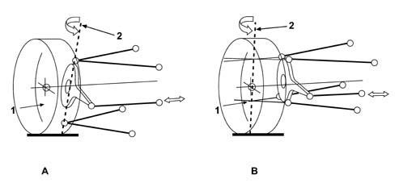
- A - Quadrilateral suspension
- B - Lancia Thesis multilink suspension
- 1 - Wheel centre
- 2 - Steering axis
With multilink suspension the steering axis of the wheel is "projected" near the centre of the wheel, beyond the physical limit of the track rod ends of the suspension arms connected to the wheel assembly. The definition of the virtual steering axis comes from this.
This property, together with the geometry with five rods, makes it possible to achieve the following excellent performance:
- longitudinal comfort by means of: insensitivity of the steering to longitudinal disturbances coming from the road; absorption of longitudinal impact forces when driving over an obstacle through the retraction of the wheel assembly
- driving feeling by means of: steering axis geometry sensitive to the increase in lateral forces round bends and the geometry of the steering axis being insensitive to vertical load transfers round bends
- road holding and drive due to the geometric positioning of the flexible centre and the pitching centre of the suspension
- manoeuvrability and centering thanks to the camber thrust of the wheels produced increasingly as the steering angle increases.
The construction consists of:
- Chassis: this carries out the function of connecting the suspension to the vehicle bodyshell. Other important functions carried out by this component are supporting the engine, the steering box and the anti-roll bar. Thanks to the presence of an interface with the bodyshell with four flexible mountings, the chassis also carries out the important function of filtering the forces coming from the above mentioned systems with advantages in terms of driving comfort.
- Steering knuckle. In addition to the wheel and brake disc, it supports the driveshaft and the brake caliper. Its movement is guided by five rods. Its characteristic shape, with the swan's neck top section, takes into account the requirements of integrating the wheel with the styling of the bodywork for both vertical movements and steering.
- Shock absorber fork. This component is vital for transmitting the forces and movements from the wheel to the shock absorber spring assembly via the spring holder arm
- Spring holder arm (lower front rod). This supports the loads transmitted from the shock absorber spring assembly. Given the extreme difficulty of the task, it is hinged to the chassis by means of strong ball joints unlike the other arms which are connected by flexible bushes.
- Lower rear arm. This guides the wheel whilst it is being retracted as the result of an impact with an obstacle. With this in mind it is connected to the chassis by means of a hydro-elastic bush with soft calibration. Its "boomerang" shape is conditioned by size requirements during the outside steering of the wheel.
- Upper front rod. It is connected via the upper support to the bodyshell. Subject to limited forces, its main function is to define the correct geometry for the steering axis.
- Upper rear arm. It has similar functions to the upper front arm.
- Upper support. This is the element which connects the upper part of the suspension to the bodyshell. Acting as a preassembly structure for the upper arms it guarantees the alignment of and consequently the precision of the steering and wheel geometry.
- Flexible and damping elements. The assembly comprising the spring, shock absorber and end of travel buffer is connected to the bodyshell by means of a special flexible mounting.
- Flexible bushes. All the joints are designed defining the flexible specifications adapted to guarantee the stable and comfortable behaviour of the axle.
The diagram below illustrates the virtual axle front suspension for the Lancia Thesis
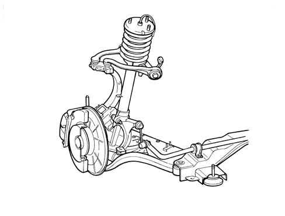
SPECIFICATIONS
Performance
The front suspension with five rods differs from traditional quadrilateral suspension through the splitting of the upper arm and the lower arm in order to make the rotation of the steering knuckle around a virtual axis possible. Doing this avoids the onset of steering reaction torques when driving over an obstacle. During a longitudinal impact the lower rear arm receives the greatest longitudinal force and retracts driving the wheel. The force acts on the point where the extensions of the two arms join and therefore does not produce components on the steering rod.
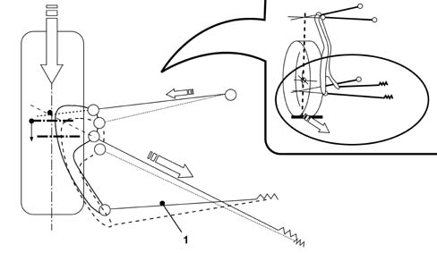
- 1 - Steering rod
If there are lateral forces round bends the lower front arm receives the greatest lateral force but thanks to the rigidity of its mounting point it does not retract. The compression force acting on the steering rod allows the rotation of the steering knuckle producing a stabilizing effect when cornering (divergence).
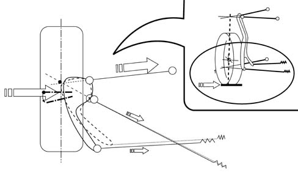
The diagram below shows the traces on the ground and at the wheel centre left by the steering axis during steering for physical and virtual axes. The different traces of the steering axis demonstrate how in the case of suspension with a virtual steering axis there is greater mobility with the retraction of the axis (outer wheel position) and moving forward of the axis (inner wheel position). This can also assist realignment with large steering angles.
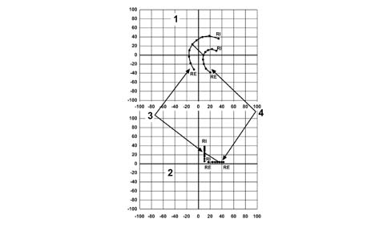
- 2 - Physical steering axis
- 2 - Traces on the ground
- 1 - Virtual steering axis
- 4 - Traces at the wheel centre
- Re = Outer Wheel
- Ri = Inner Wheel
Technology
The best compromise has been sought for every component between lightness, size and resistance to the operating stresses of the suspension.
As a result of this approach specific materials and technology has been used for each of the components mentioned.
COMPOSITION
Chassis
The chassis has been produced using the innovative tube hydro-moulding technology, the first example of its application for the Fiat Group and one of the first on European vehicles. The use of this process has made it possible to produce optimum shape and thickness, drastically reducing the use of welding which is typically employed on traditional box section structures.
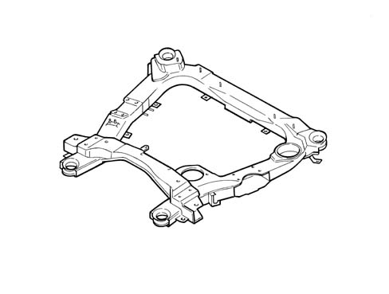
Steering knuckle
The steering knuckle is one of the most stressed parts. It has been designed to meet the requirements of being compact and, at the same time, strong (necessary to allow required driving precision). The technology of forged steel has therefore been selected.
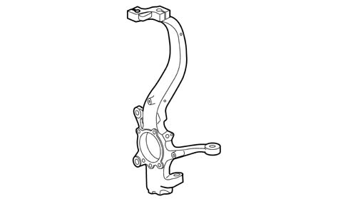
The shock absorber fork
The shock absorber fork is made from spheroid cast iron which gives a good compromise between the shape and strength requirements needed by this component which is located astride of the driveshaft for reasons of space. It is designed for the mounting of the anti-roll bar. The connection of the shock absorber casing is the clamp type.
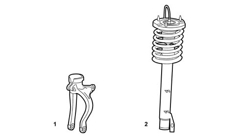
- 1 - Fork
- 2 - Shock absorber/spring assembly with mounting and buffer
Front lower arm
The front lower arm is in forged aluminium with an integrated ball joint. The housing for the bush connected to the shock absorber fork is between the ends. It is connected to the chassis by means of a specific aluminium support.
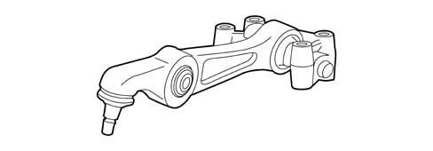
- A - Front lower rod (spring holder) preassembled to the chassis mounting support
Rear lower arm
The rear lower arm is made from forged aluminium and features a "boomerang" shape which is requierd to avoid contact with the wheel during steering. The housing for the hydro-elastic bush is at the end of the chassis side, whilst it is connected to the steering knuckle by means of a special joint.
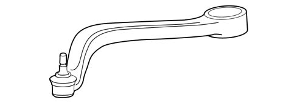
- A - Lower rear arm
Upper arms
The upper arms, made from forged aluminium, lead to the ball joints on the steering knuckle side, whilst being connected by bushes on the chassis side.
Their position in relation to the bodyshell is important to ensure the correct steering geometry. For this reason they are preassembled with the specific upper aluminium support which is, in turn, connected to the bodyshell after centering using suitable gudgeon pins.
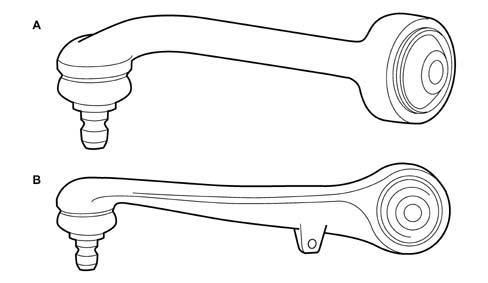
- A - Upper front rod
- A - Upper rear rod
The diagram below illustrates the upper rod assembly preassembled to the bodyshell mounting support
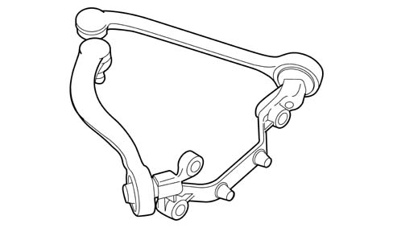